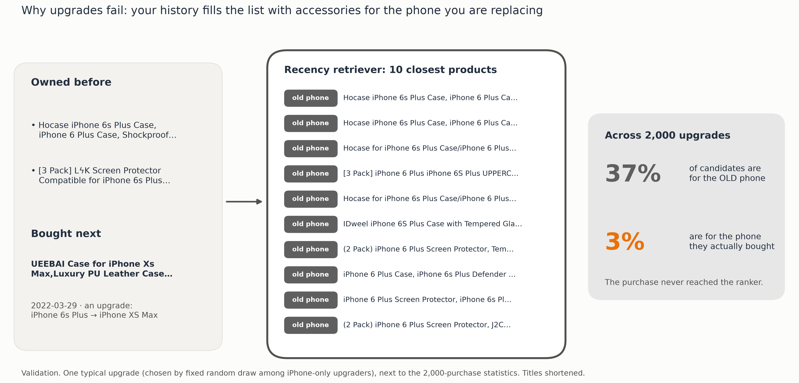

It's Not the Ranker, It's the Data
How retrieval and ranking choices shape a two-stage product recommender (RQ1–RQ3)
A two-stage recommender, studied one stage at a time
- Pipeline: a retriever picks 200 candidates per user; a ranker orders them into the top 10 the user sees.
- Experiment A (retrieval): vary the retriever, the candidate count K and the search index with the ranker fixed → RQ1, RQ2.
- Experiment B (ranking): vary the ranker on identical candidate lists → RQ3.
- Output: Recall@K, nDCG@10 and latency trade-offs, and retrieval misses vs ranking misses.
- Protocol: time split (train to Aug 2021, Validation to Jul 2022, then Test); 3 seeds; paired user bootstrap; every choice made on Validation; Test opened once with predictions written first.
The trained two-tower beats every baseline, but two retrievers that see different products beat any one
At a fixed candidate count, does our two-tower retriever beat popularity, BPR-MF, ItemKNN and SASRec on Recall@K?
| Retriever (same training period) | Val Recall@200 | Val nDCG@10 | New products R@200 |
|---|---|---|---|
| Popularity | 0.027 | 0.0017 | 0.000 |
| ItemKNN | 0.008 | 0.0006 | 0.000 |
| BPR-MF | 0.027 | 0.0017 | 0.000 |
| SASRec | 0.040 | 0.0031 | 0.000 |
| Two-tower (text) | 0.069 | 0.0057 | 0.026 |

More candidates help up to K≈100–200, and HNSW is a free speed-up, once the ranker is trained on real lists
With retriever and ranker fixed, how do K and Flat / HNSW / IVF search affect Recall@K, nDCG@10 and latency?
| K (candidates) | 10 | 50 | 100 | 200 |
|---|---|---|---|---|
| Recall@K | 1.2% | 2.7% | 3.9% | 5.5% |
| nDCG@10 ×10⁻³ | 6.75 | 7.83 | 8.07 | 8.11 |
| Index (K=200) | Overlap with exact | nDCG@10 ×10⁻³ | Median latency |
|---|---|---|---|
| Flat (exact) | 100% | 7.37 | 3.4 ms |
| HNSW | 99.4% | 7.37 | 1.5 ms |
| IVF | 94.6% | 6.75 | 0.9 ms |
- Shortcut 1, forced lists: our first ranker was trained with missed purchases appended at the bottom of each list, so it learned "lowest score = the answer" and collapsed as K grew (−72% at K=500). Training on natural lists removes the collapse: +24% at K=200.
- Mixing forced lists back in degrades K=500 step by step: 7.9 → 5.5 → 3.9 → 2.3 (×10⁻³).
DIN beats the MLP, but what the ranker is fed matters more than its architecture or loss
On identical lists, how do popularity order, retrieval order, an MLP and DIN compare?
| Test nDCG@10 ×10⁻³ | Recency lists | Two-tower lists | Mixed lists |
|---|---|---|---|
| Popularity order | 1.51 | – | – |
| Retrieval-score order | 6.04 | – | – |
| MLP | 6.53 | 5.19 | 7.31 |
| DIN | – | 6.37 | 8.27 |
- DIN vs MLP on identical mixed lists: +13% on Test [+0.0008, +0.0011], winning on popular, niche and new products.
- Changing the ranker's loss (BCE → pairwise) moved Test nDCG@10 by at most 0.0005.
- Shortcut 2, the retriever's habits: the ranker must be retrained on the lists it will rank; 55% of the mixing gain needs retraining.
- Shortcut 3, statistics age: the ranker learned "no reviews yet = likely purchase". Statistics as old as in training: +21% on Test, same frozen model.
Most failures happen before ranking; the fixed system is 59–61% better for 14–28 ms more per user


- Best combined system (mixed lists + consistently timed monthly statistics + "bought together" inputs): Test nDCG@10 0.0064 → 0.0104 (+61%); 8 of 9 pre-registered predictions held.
- DIN on mixed lists vs the original MLP: 0.0052 → 0.0083 (+59%); new products ×5.8; 4 of 5 predictions held fully.
Shortcut 4: the system recommends more of what you already own
Both retrievers build the query from your own history. The cascade excels at another accessory for a phone you own, from a store you know, and stays blind to upgrades, platform switches and new stores. Validation, original → best system.





Takeaways
- RQ1: the trained two-tower beats every baseline; two retrievers that see different products beat any one.
- RQ2: K beyond ~100 adds little and HNSW costs nothing, once the ranker is trained on lists like the ones it will rank.
- RQ3: DIN beats the MLP, yet natural training lists, both retrievers' ranks and statistics of the right age matter more.
- Output: most misses are retrieval misses; the system serves buyers accessorising a phone they own.
Every shortcut is one lesson: the ranker learns whatever its inputs make easy.

Validation unless marked Test. Phone and platform labels from titles are approximate. Latency measured on a laptop CPU, single thread.